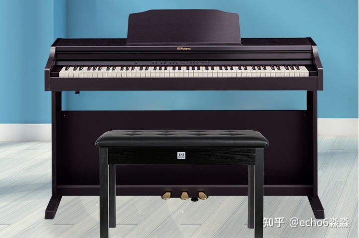
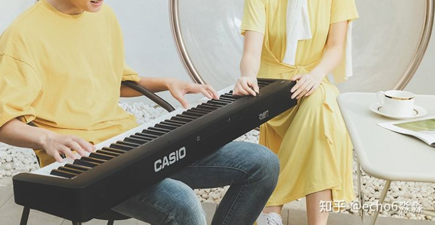

电钢琴是从机械钢琴延伸而来的，所以分类基本和钢琴一样，从外形上来说可以分为三角电钢琴，立式电钢琴。
然后为了方便携带，省去了立式钢琴其他部分，只保留键盘，便于携带和舞台演出，我们可以称之为便携式电钢琴。还有一种多功能电钢琴，它胜在音色的丰富度，内含电子琴和合成器功能。
三角电钢琴：

立式电钢琴：
便携式电钢琴：
电钢琴选择最看重的只有两点：键盘系统和音源技术。
在键盘选择上，各商家都有自己一套的宣传术语，消费者不好区分。
但实际上，判断键盘优劣的方法很直观，我们所说的键盘系统，主要就是键盘材质和附加功能的搭配。
材质上，木质优于塑料，附加功能主要有仿象牙表面、感应器、擒纵结构和配重装置，这些功能可以相叠加。
于是我们便有了区分键盘的标准——材质越好，附加功能越多，越逼近原声钢琴键盘的越好
音源方面，首先是采样。现在优秀的品牌电钢琴大多以顶级音乐会钢琴为音源，而且是分区域采集，一个样本音由多个琴键音录制而成，收录了琴键从轻弹到重弹的细微变化。还会模仿原声钢琴在按下一个琴键时，旁边的琴弦也会跟着振动的效果。
除此之外还要整合。以罗兰的SuperNATURAL为例，首先我们要明白电钢琴的发声原理。普通电钢琴分区域采样原声钢琴音色，通过调整频率和振幅改变音高和音量，因此存在音色变化不自然，强弱音变化突兀的问题。SuperNATURAL技术通过88键独立地音色取样，实现了不分段、无缝的力度变化，这是其最显著的特点。
在动态范围上，普通电钢琴在强弱音变化是只是简单的音量变化，和真实钢琴的表现力差距较大，SuperNATURAL通过数字建模，极大提升了电钢琴的表现力，从弱音到强音，不仅音量变大，音色也变得明亮，这让罗兰的音色变得前所未有的真实。
说道电钢琴，稍微了解的人都会知道四大厂，也就是被日本垄断的罗兰、雅马哈、卡西欧和卡瓦伊4大品牌啦。
垄断是有原因的，人家的技术 和实力确实是超群的，拿我国最优秀的电钢品牌珠江艾茉森来说，您会发现他核心的键盘或者音源技术均采用进口。
所以本文我们重点介绍电钢琴四大品牌中的高中低档代表产品，让您选择电钢琴不再头疼。
————视频：Roland FP-90X D50音色试听————
罗兰是世界顶级的电子乐器制造商和销售商，研发实力超群，被称为钢琴界的“技术极客”，多次引领行业技术革新。
1983年，罗兰开发的midi通信协议规范，让不同电子乐器实现彼此互联，还有比如罗兰首创的SA声音引擎系统，以顶级音乐会钢琴为音源。可以这样说，我们现在在电钢琴上看到的主要功能，都和罗兰有关。
在美国权威音乐杂志Music Trades的电钢琴排名中，罗兰被排在第一梯队第一名，足见其在业界中的地位。
我们这里仅介绍罗兰的立式和便携式电钢琴
1、高端系列（LX700）
LX700为罗兰高端立式钢琴系列，其中又分为旗舰级的LX708、中档的LX706和入门的LX705，售价在1.7-3万元，有高达324种丰富音色。
LX708
采用Hybrid Grand键盘，8扬声器。
Hybrid Grand键盘是罗兰近年推出的高端键盘。
罗兰旗舰级电钢琴。键盘更长，因此每个键的枢轴点都设置得更靠后，这让其手感尤为细腻。8枚扬声器配置，创造出逼近原声三角钢琴音效的沉浸式音色，再现美妙声音。
LX706
采用Hybrid Grand键盘，6扬声器。
多扬声器是为了适应舞台演奏的需求，而如果只是家用，不必追求过多的扬声器。所以LX706性价比尤为突出
LX705
LX705则采用PHA-50键盘，2扬声器.
PHA-50应用于罗兰旗舰的三角电钢系列中，采用的是“木质键盘+塑料型材骨架”混合材质构造，手感、耐久度表现出色，且每一个键都连接一个高分辨率传感器，这意味着手指力度发生一点改变都会引起音色上的细微变化，各项配置无愧高端二字。
2、中端（HP系列）
罗兰的SuperNATURAL技术极大程度还原了真实钢琴的声音细节。
SuperNATURAL技术通过88键独立地音色取样，实现了不分段、无缝的力度变化，这是其最显著的特点。
SuperNATURAL通过数字建模，极大提升了电钢琴的表现力，从弱音到强音，不仅音量变大，音色也变得明亮，这让罗兰的音色变得前所未有的真实。
而罗兰HP701正是配置罗兰独有的SuperNATURAL音源，键盘采用PHA-4键盘。
3、入门（RP、FP系列）
罗兰的RP、FP系列售价很亲民，外形小巧，定位家用。是儿童学习钢琴的的实惠选择，配有多种创意音色、内建古典音乐以及录音、学习功能，采用手感良好的PHA-4 键盘，是性价比较高的入门立式电钢。
RP302
RP30
FP10
如果预算不足或家中空间有限，也可考虑FP系列，该系列一直在网络上保持着超高的人气和销量。
————视频：Yamaha MoDX8 CFX大钢琴音色试听————
雅马哈是世界最大的乐器制造商之一，钢琴是雅马哈的最重要的产品线。
雅马哈最开始就是以维修钢琴起家，是日本钢琴制造业的鼻祖，在原声钢琴领域有超过110年的制造经验，1983年开始进军电钢琴领域，2008年收购奥地利传奇钢琴品牌贝森朵夫。
Music Trades发布的“全球乐器与音响制品行业225强”榜单中，雅马哈年年稳居第一，且销售收入遥遥领先。
我们这里仍只介绍立式钢琴、便捷式与多功能钢琴。
1、高端（CLAVINOVA系列）
雅马哈的立式造型，纯电钢琴型号以CLP开头，主打音质和键盘手感，搭载了雅马哈最顶尖的音源及采样技术。是1-1.6万元价位性价比颇高的立式钢琴。
CLP-725
采用最新的GrandTouch-s键盘系统
2、中端（ARIUS系列）
该系列为中端立式系列，也是雅马哈占领市场的主流产品，价格区间在5000-10000元，是性价比极高的电钢琴。
YDP-164
三踏板组件，音色采样来自雅马哈自产的音乐会三角钢琴CF3S。带有4种力度感应，复音数达到了192个，采用GH3键盘。
3、入门（P系列、DGX和KBP系列）
P系列是市面上便携式电钢琴标杆，展现雅马哈全方位布局的产品实力，裸琴价格普遍在4000元以内，10kg左右的重量，给钢琴爱好者提供了便捷的摆放方式和收纳方案，也同样适合乐队演出。
P45
卡西欧从1986年开始制造电钢琴，其生产的电钢琴和电子琴以超高的性价比著称。
相同的价位，卡西欧往往比竞争对手提供更高的配置和工艺，设计更加青春时尚，充满现代气息。正因如此，中国消费者形象地把卡西欧称为“电钢琴界的小米”。
高端（CELVIANO系列）
该系列搭载卡西欧AiR 音源技术和渐进式重锤击弦键盘，有3级力度感应，接近传统钢琴的手感和音色，但价格却极具吸引力，在5000-13000元之间。
卡西欧的产品，在7000元价位，常用来和其他品牌万元以上的产品比较，非常有性价比。
AP-470BK
中端（PX系列）
中国消费者俗称为飘韵系列。该系列外观时尚便携，立式钢琴的重量在30kg左右，而舞台钢琴仅为10kg左右，除了传统的黑白棕,还有蓝、红、金等颜色，充满了青春气息，价格区间在4000-8000元。
卡西欧采用名为AiR Grand三角钢琴音源系统，实际上就是一套模拟和采样技术，“多维立体渐变处理”技术模拟的是原声钢琴上不同力度敲击和释放琴键时琴弦的音色转化，让力度感应更加灵敏，音符连接更加平滑。
可以关注2017年新上市的PX-870和PX-770，主要区别是扬声器功率和音色数量的不同。
PX-870
PX-770
卡瓦依创始人河合小市起初在雅马哈公司担任技术骨干，1927年自立门户，创办了河合乐器制作所，也就是如今的卡瓦依公司。
卡瓦依在1986年开始进入电钢琴领域，是四大品牌中唯一的只生产钢琴的企业。
罗兰和卡西欧希望在电钢琴市场对传统钢琴有所颠覆，而卡瓦依则坚守传统，一切以模仿原声钢琴为最高目标。
高端（CA和CN系列）
CA系列的音色手感均称得上立式电钢琴的标杆，价格在一万元上下，适合专业钢琴学习者。
CA33
全实木键盘，手感直逼真实钢琴，采样卡瓦依经典钢琴真实音源，音色浑厚细腻，适合需要长期学习钢琴者选购。
CN系列的键盘不如CA，采用清越键盘，但融入了更多的音色模拟，并带有显示屏，易用性有所增加，外形上也更具现代气息。
CN29
中端（KDP、KCP）
KDP110
入门（ES系列）
入门级ES系列便携式电钢更适合需要经常演出或房间空间有限的用户，ES110在复音数量和扬声器方面优化不少，并且增加了蓝牙MIDI模块，在ES系列中键盘手感也是最好的，最值得购买。
ES110
Keyboard Planet为您简单科普了电钢琴的分类，电钢琴选择要点：键盘系统和音源技术。然后为您继续科普 了4大电钢琴品牌：罗兰，雅马哈，卡西欧、卡瓦伊产品线分类，其中一些高性价产品都有点明。祝您有愉快的购物体验！